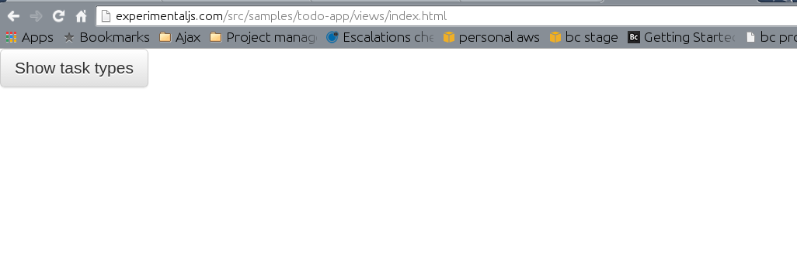
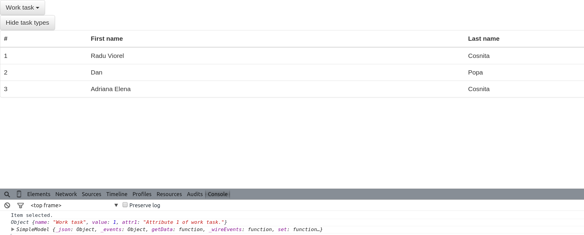

Summary
In this tutorial you are going to create a simple application which uses several available components from the framework. During the tutorial you will learn the basic principles of the framework.
App description
The application we are going to create uses a dropdown component, a button and a datagrid. Below you can see some screenshots of the app:




App components
The application we are creating uses the following components:
App code
The source code for this application can be found on github: https://github.com/rcosnita/experimental-js-components/tree/master/src/samples/todo-app
Each application which uses the current framework has a minimum set of requirements:
- Provide an app configuration
- Provide an app controller
- Provide an app view
- (Optional) create custom application models.
App view
<!DOCTYPE html>
<html>
<head>
<title>Welcome to todo application.</title>
<link rel="stylesheet" type="text/css" href="../../../../lib/bootstrap-3.3.4/css/bootstrap.css" />
<link rel="stylesheet" type="text/css" href="../../../../lib/bootstrap-3.3.4/css/bootstrap-theme.css" />
<meta name="viewport" content="width=device-width, initial-scale=1">
</head>
<body>
<div data-sid="todo-app">
<div data-comp-sid="dd-task-types" data-comp-type="dropdown"></div>
<div data-comp-sid="btn-refresh" data-comp-type="button"></div>
<div data-comp-sid="grid-tasks" data-comp-type="datagrid"></div>
</div>
<script type="text/javascript" src="../../../../lib/require-2.1.17.js"></script>
<script type="text/javascript" src="../app.js"></script>
</body>
</html>In the above code take a look at how components are defined within the view:
- data-comp-type - defines the type we component we want to use from the framework.
- data-comp-sid - defines the unique identifier under which the component will be accessible from app controller.
App controller
define(["factories/model!simple_model", "utils/constants"], function(SimpleModel, Constants) {
function TodoApp() {
this.config = {
"selector": "div[data-sid='todo-app']",
"components": {
"btn-refresh": {
"model": new SimpleModel({"label": "Show task types"})
},
"dd-task-types": {
"model": new SimpleModel({
"title": "Sample dropdown",
"items": [
{"name": "Work task", "value": 1, "attr1": "Attribute 1 of work task."},
{"name": "Personal task", "value": 2, "attr1": "Attribute 2 of personal task."}
]
}),
"valueName": "value",
"textName": "name"
},
"grid-tasks": {
"model": new SimpleModel({
"columns": [
{"id": "#", "name": "#"},
{"id": "firstName", "name": "First name"},
{"id": "lastName", "name": "Last name"}
],
"items": [
new SimpleModel({"#": "1", "firstName": "Radu Viorel", "lastName": "Cosnita"}),
new SimpleModel({"#": "2", "firstName": "Dan", "lastName": "Popa"}),
new SimpleModel({"#": "3", "firstName": "Adriana Elena", "lastName": "Cosnita"})
]
})
}
}
};
};
TodoApp.prototype.start = function() {
var ddTaskTypes = this.components["dd-task-types"],
btnRefresh = this.components["btn-refresh"],
gridTasks = this.components["grid-tasks"];
this._hideComponents([ddTaskTypes, gridTasks]);
this._wireBtnRefreshEvents();
this._wireDdTaskTypesEvents();
this._wireGridTasksEvents();
};
TodoApp.prototype._hideComponents = function(comps, visible) {
comps = comps || [];
visible = visible || false;
var evtName = !visible ? Constants.COMPONENT_HIDE_EVENT : Constants.COMPONENT_SHOW_EVENT;
for (var compIdx in comps) {
comps[compIdx].trigger(evtName, {});
}
};
TodoApp.prototype._wireBtnRefreshEvents = function() {
var ddTaskTypes = this.components["dd-task-types"],
btnRefresh = this.components["btn-refresh"],
gridTasks = this.components["grid-tasks"],
self = this;
btnRefresh.on(Constants.COMPONENT_BTN_CLICK_EVENT, function() {
if (!ddTaskTypes.config.model.get(Constants.MODEL_PROPERTY_VISIBLE)) {
ddTaskTypes.trigger(Constants.COMPONENT_SHOW_EVENT, {});
gridTasks.trigger(Constants.COMPONENT_SHOW_EVENT, {});
btnRefresh.config.model.set("label", "Hide task types");
return;
}
ddTaskTypes.trigger(Constants.COMPONENT_HIDE_EVENT, {});
gridTasks.trigger(Constants.COMPONENT_HIDE_EVENT, {});
btnRefresh.config.model.set("label", "Show task types");
});
};
TodoApp.prototype._wireDdTaskTypesEvents = function() {
var ddTaskTypes = this.components["dd-task-types"];
ddTaskTypes.on(Constants.COMPONENT_DD_ITEM_SELECTED_EVENT, function(model) {
console.log("Item selected.");
console.log(model);
});
};
TodoApp.prototype._wireGridTasksEvents = function() {
var gridTasks = this.components["grid-tasks"],
self = this;
gridTasks.on(Constants.COMPONENT_DATAGRID_ITEM_SELECTED_EVENT, function(selectedItem) {
console.log(selectedItem);
});
};
return TodoApp;
});Each application controller must defines its dependencies using requirejs. In the class constructor each app controller must define a config json property with the following structure:
- selector - defines the component selector used to choose the dom element transformed into an app.
- components - contains a json object where each key must point to a defined component sid used in view.
For instance,
this.config = {
"selector": "div[data-sid='todo-app']",
"components": {
"btn-refresh": {
"model": new SimpleModel({"label": "Show task types"})
}
}
};tells that button label is provided by a simple model. Each component provides examples of what can be configured and how it can be used.